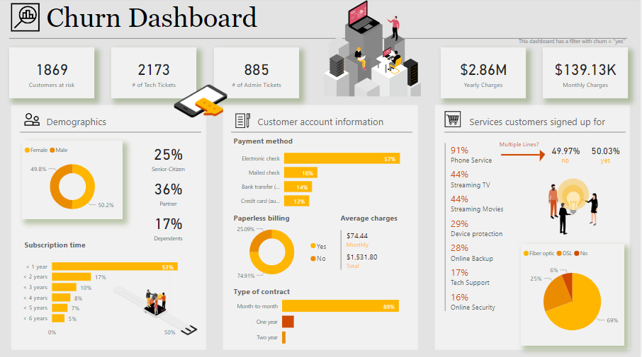
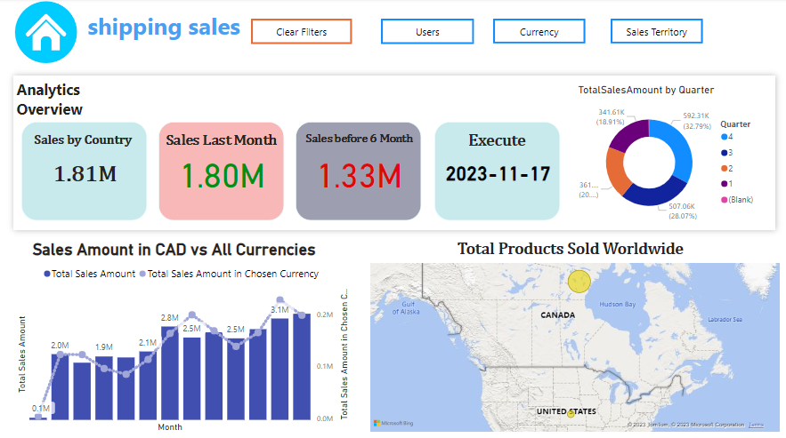
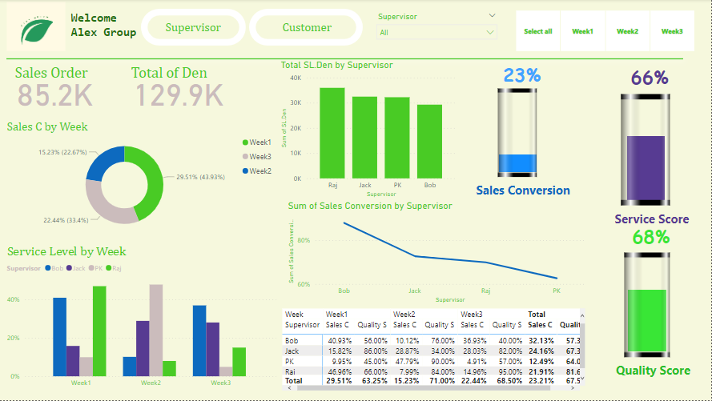

Superstore is a retail dataset that provides valuable insights into sales, orders, and customer information. Leveraging SQL, one can analyze this data to extract meaningful trends and patterns. By querying tables such as "Orders," "Customers," and "Products," one can assess sales performance, customer behavior, and product popularity. SQL functions like GROUP BY and JOIN enable aggregations and correlations, facilitating a comprehensive understanding of the superstore's operations. Whether examining regional sales disparities or identifying top-selling products, SQL empowers analysts to extract actionable intelligence from the Superstore dataset, aiding in strategic decision-making for enhanced business performance.

The Phone Services Churn Dashboard on Power BI provides a comprehensive visual overview of customer retention metrics for a telecommunications company. Through intuitive graphs and charts, it tracks key indicators such as customer churn rates, subscription trends, and demographic insights. Users can quickly assess the health of their customer base, identify high-risk segments, and make data-driven decisions to enhance retention strategies. This dynamic dashboard empowers telecom professionals to proactively address customer attrition, optimize service offerings.

E-commerce analysis performed by using probability, clustering, Time series, most Profitable States are New York, Washington and California. Customers generally prefer standard delivery. 95% of the time, days in one month will have between 87 and 127 orders placed.

Welcome to our dynamic Shipping Sales Dashboard, an advanced analytics tool meticulously crafted with Power BI to provide real-time insights into your shipping and sales performance. This intuitive and visually stunning dashboard is designed to empower decision-makers with a comprehensive overview of key metrics, enabling data-driven strategies and informed decision-making in the ever-evolving world of logistics.

The Housing Price Analysis is a comprehensive solution that combines the power of SQL, Python, and Power BI to provide in-depth insights into real estate market trends, property valuation, and housing price predictions. This tool allows users to query, process, and visualize large housing datasets, enabling them to make informed decisions when buying, selling, or investing in properties.

In this Power BI project, i delve into the Supervisor Dataset to conduct a comprehensive analysis of sales quality trends over a series of weeks. This data-driven exploration will provide valuable insights into the performance and effectiveness of supervisors in maintaining and improving sales quality within the organization. Through visualizations and in-depth assessments, i aim to uncover patterns, anomalies, and opportunities for optimization in the context of weekly sales quality.

The Call Center Dashboard in Power BI offers a comprehensive and visually intuitive interface for monitoring, answering, and resolving customer queries efficiently. With real-time data visualization, it provides key metrics such as call volume, average response time, and agent performance. The interactive dashboard allows instant identification of trends, enabling quick decision-making for optimizing call center operations. Featuring drill-down capabilities, supervisors can delve into specific issues, track resolutions, and assess customer satisfaction. The user-friendly design empowers agents and managers alike to enhance productivity and deliver exceptional customer service through actionable insights.

This machine learning model aims to predict machine failures by leveraging historical data on product performance. By analyzing patterns in the provided features, the model can identify potential failure risks before they escalate, allowing for proactive maintenance and minimizing downtime.

This advanced model leverages gradient boosting techniques, optimizing decision trees for enhanced predictive capabilities. By considering various features such as historical sales data, promotional activities, and external factors, XGBoost adapts dynamically to changing patterns and ensures robust predictions. With its ability to handle complex relationships and feature interactions, the model excels in capturing nuances within the data, making it an invaluable tool for optimizing inventory and marketing strategies.